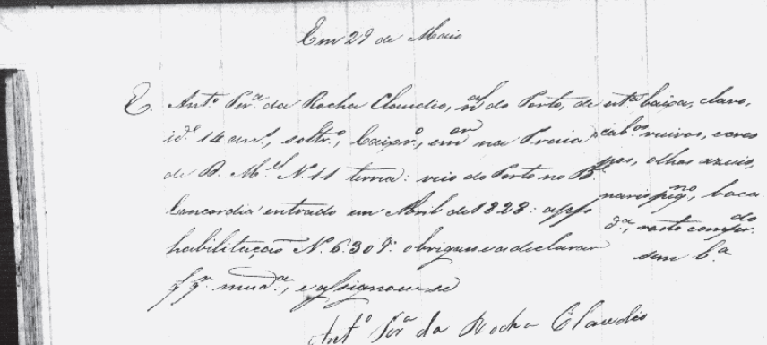
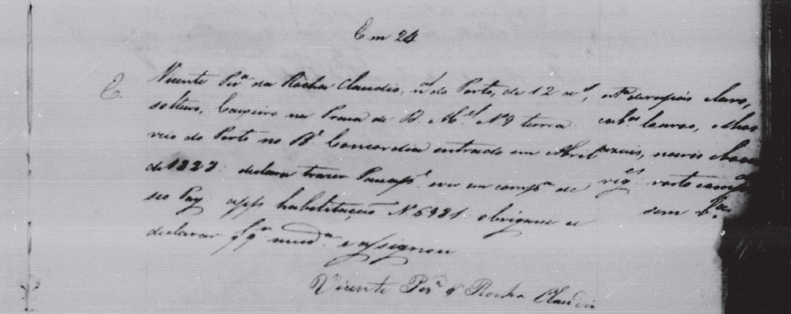

Registro de entrada
Fizemos a busca na base de dados do Arquivo Nacional e localizamos os registros de entrada no Brasil dos filhos do José Pereira da Rocha Cláudio e Rosa da Rocha Monteiro:
Entrada: abril de 1828 |
|

Antônio Pereira da Rocha Claudio, naldo Porto, de ide 14 ans, soltro, caixro, emor na Praia de D. Mel No 11 terra: veio do Porto no Be Concordia entrado em Abril de 1828: apse habilitação N. 6309: obrigou a declarar qlqr muda, e assignou-se Antônio Pereira da Rocha Cláudio |
esta baixa, claro, cabos ruivos, crespos, olhos azuis, nariz peqno, boca ?, rosto comprdo, sem ba |

Vicente Pera da Rocha Claudio, naldo Porto de 12 ans, solteiro, caixeiro na Praia de D. Mel, No 9 terra veio do Porto no Be Concordia entrado em Abril N. 1828: declarou trazer ... em compa de seu pai aps habilitação N 6981 obrigou a declarar qlqr e assignou Vicente Pera da Rocha Cláudio |
?, claro, cabos louros, olhos azuis, nariz ?, ? ?, rosto comprdo, sem ba |

Jozé Pereira da Rocha, naldo Porto. Cast olhos ... ide 13 as, soltr caixr ... D. Manuel No 23 loja: veio ... Porto no Be Dinamarqs entrando em abril 1828 aps habo de N. 13762 e assignou Jozé Pera da Rocha |
Fonte
Arquivo Nacional - Acervo sobre a entrada de estrangeiros